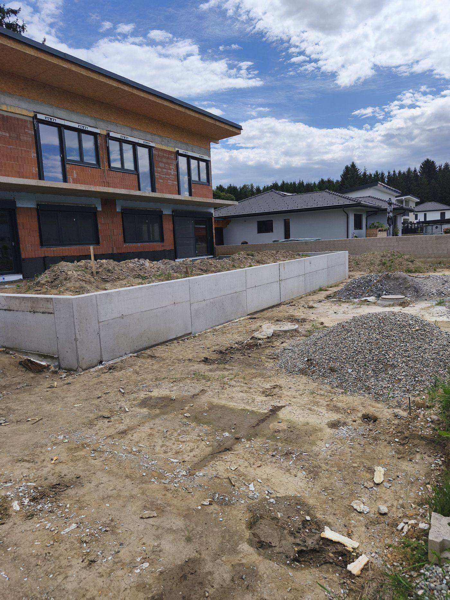
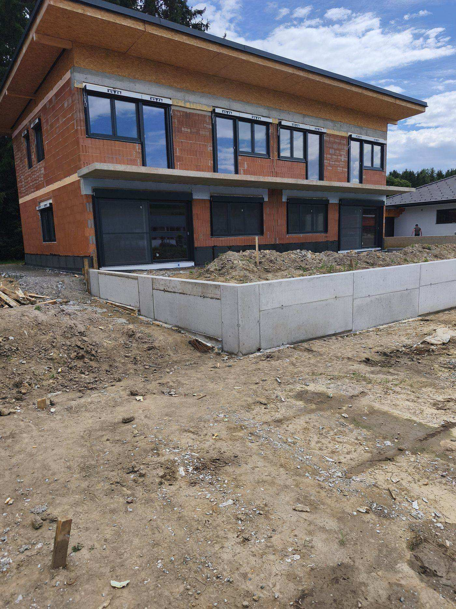
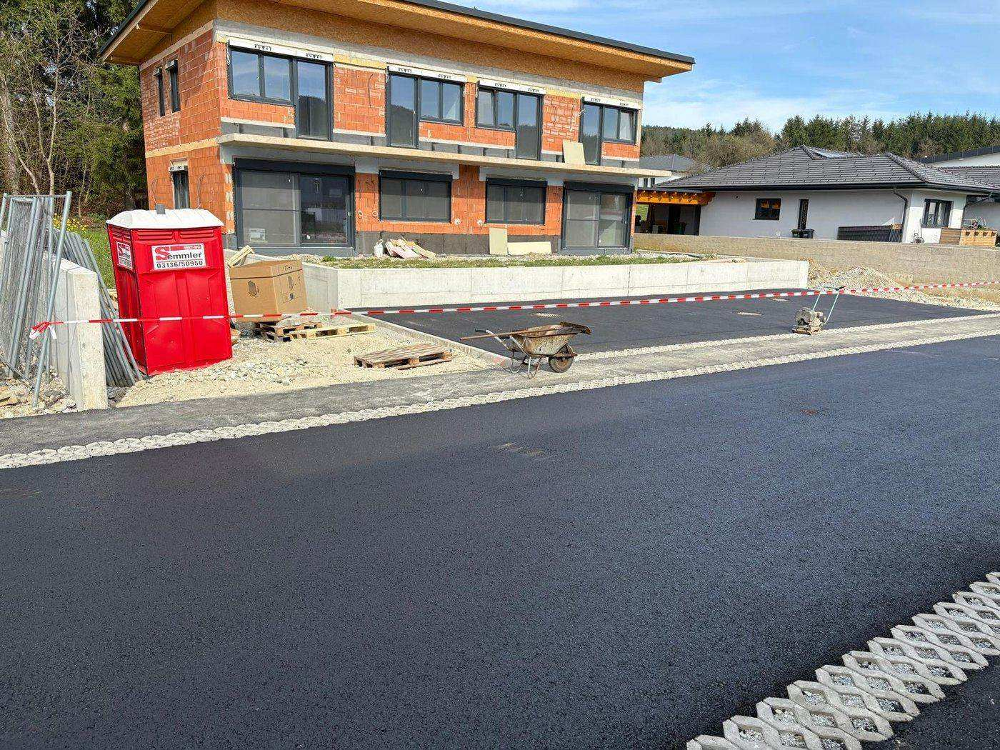
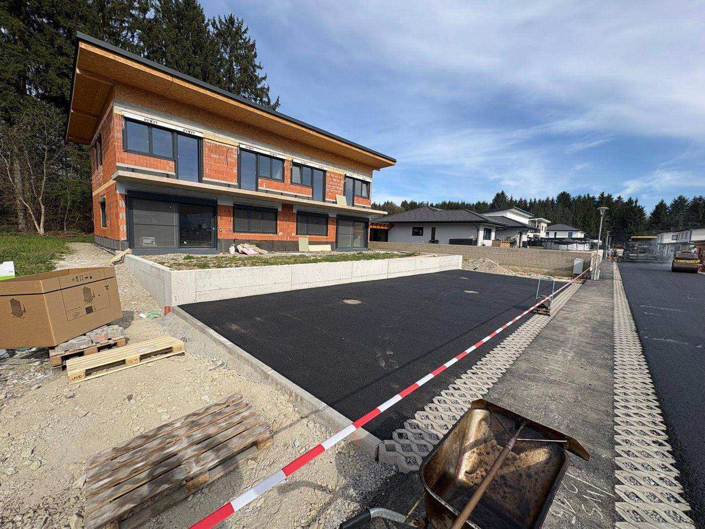

Škarpe in podporni zidovi v Mariboru
Utrjevanje terena in brežin – betonske ter kamnite škarpe in oporni zidovi.

Zanesljivo utrjen teren
Gradimo betonske in kamnite škarpe ter oporne zidove za utrjevanje brežin in premagovanje višinskih razlik. Poskrbimo tudi za drenažo, da zaledna voda ne poškoduje zidu. Podporne zidove in škarpe gradimo na nagnjenih parcelah v Mariboru in okoliških krajih (Ruše, Hoče, Pesnica).
- Betonske in armiranobetonske škarpe
- Kamnite škarpe in suhozidi
- Oporni zidovi in utrjevanje brežin
- Drenaža in odvodnjavanje zalednih voda
- Ureditev in ozelenitev brežin
Utrjevanje terena in urejene brežine.



Potek izvedbe škarpe in podpornega zidu v Mariboru
Betonske in kamnite škarpe v Mariboru gradimo za varno utrjen in urejen teren okoli objekta.
- Izkop in priprava temeljev za zid
- Drenaža in odvodnjavanje zaledne vode
- Opaž in armatura betonskega zidu
- Betoniranje oz. zidava kamnite škarpe
- Zasip, ureditev terena in zaključna obdelava
Koliko stane škarpa ali podporni zid v Mariboru?
Cena škarpe je odvisna od višine in dolžine zidu, izbrane izvedbe (betonska ali kamnita), potrebne drenaže ter dostopnosti terena za stroje. Po ogledu lokacije v Mariboru pripravimo oceno del skupaj z odvodnjavanjem.
Povprašajte za ponudboPogosta vprašanja
Kakšno škarpo potrebujem za svojo brežino?
Ali poskrbite tudi za drenažo?
Koliko stane škarpa ali podporni zid v Mariboru?
Potrebujete škarpo ali oporni zid?
Pokličite ali pišite in dogovorimo se za ogled ter oceno del.